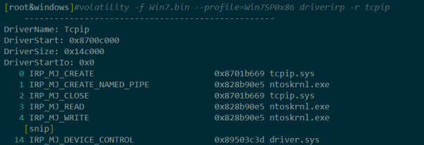
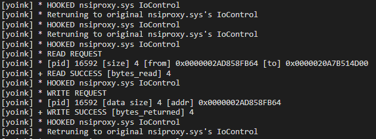
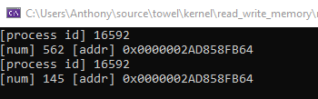

# Hook Driver's IO Control
•
https://github.com/SamuelTulach/memdrv - Big credit goes here
Because you're running in the kernel, at the same privilege level as other objects,
you can grab any object on the system (objects like drivers, etc.)
The premise in this technique is to hook another driver's IO control function, the
DriverObject->MajorFunction[IRP_MJ_DEVICE_CONTROL]to point to your own IO control function in your own driver.
This makes userland <--> kerneland communication obscurred
because you're sending IO commands to an exisitng, legitimate driver
(but executing your IO commands like reading/writing kernel memory will still be done your installed driver)
In this example we target
nsiproxy.sys.
Our kernel driver will go like this:
1. Enumerate objects in the kernel to find nsiproxy.sys
2. Find a function in nsiproxy.sys to hook (e.g. NsippCreateDevice)
3. Overwrite nsiproxy.sys's IRP_MJ_DEVICE_CONTROL to point to NsippCreateDevice
4. Hooks NsippCreateDevice to point to our own IoControl function in our own driver
Lastly from userland, we open nsiproxy.sys and send IO commands to it.
Why do we redirect IRP_MJ_DEVICE_CONTROL to an existing function in the driver and not straight into our own IO control function?
Because forensic tools like volitility can list each of the functions in the IRP table and what module they point to.
If an IRP function in
tcpip.sys points t
drivery.sys, it's fairly obvious that the tcpip.sys has been hooked.
(credit here:
https://www.tophertimzen.com/resources/cs407/slides/week06_01-Rootkits.html#slide34)
## Defense
###
PatchGuard?
I don't know whether PatchGuard protects against this or not.
In theory it shouldn't as PatchGuard apprently doesn't protect against driver to driver hooks, only against modifications to integral kernel structures.
I left my computer on for ~4 hours and PatchGuard didn't BSOD me so maybe it doesn't :shrug:
### Compare the driver's dispatch functions on disk to those in memory
The
DriverObject->MajorFunction is the driver's dispatch table.
(Refer to the MajorFunction heading
https://docs.microsoft.com/en-us/windows-hardware/drivers/ddi/wdm/ns-wdm-_driver_object)
EasyAntiCheat compares the driver's dispatch table on disk to the one in memory.
If there's a difference, then the driver's dispatch table has been modified.
## Code
For complete code:
https://github.com/pwncone/towel/tree/main/kernel/hooking/IOcontrol_hook### Kernel land
/*
Use a different driver to send control codes to
and do your read/write memory bidding for you.
This version uses nsiproxy.sys.
Credit goes here: https://github.com/SamuelTulach/memdrv
1. Finds nsiproxy.sys.
2. Finds NsippCreateDevice in nsiproxy.sys
3. Overwrites nsiproxy.sys's IoControl to NsippCreateDevice.
4. Hooks NsippCreateDevice to point to our own IoControl function.
When a control code is sent to nsiproxy.sys, it will detour to NsippCreateDevice.
NsippCreateDevice will detour to our own IoControl function.
If it's not an IO code we care to handle (read/write memory),
send the control code back to nsiproxy.sys's IoControl function.
DO NOTE!:
- You can unload this driver, but you will BSOD as soon as you do.
- To successfully unload without BSOD, restore the hook:
- restore the original bytes
- restore the target driver's IRP_MJ_DEVICE_CONTROL pointer
Should work in theory. Haven't tested.
*/
#include <ntddk.h>
#include <windef.h>
#include <ntimage.h>
#include "nt.h"
//#include <ntifs.h>
#define Dbg(...) DbgPrintEx( DPFLTR_SYSTEM_ID, DPFLTR_ERROR_LEVEL, "[yoink] " __VA_ARGS__ )
#define IOCTL_YOINKED_READ_MEMORY CTL_CODE(FILE_DEVICE_UNKNOWN, 0x801, METHOD_BUFFERED, FILE_ANY_ACCESS)
#define IOCTL_YOINKED_WRITE_MEMORY CTL_CODE(FILE_DEVICE_UNKNOWN, 0X802, METHOD_BUFFERED, FILE_ANY_ACCESS)
// ---------------------------------------------------------
// Util
// ---------------------------------------------------------
PVOID FindModuleBase(char* module_name)
{
PVOID module_base = NULL;
ULONG buffer_size = 8;
PVOID info_buffer = ExAllocatePool2(POOL_FLAG_NON_PAGED, buffer_size, '1luL');
// Enumerate the loaded modules on the system
ULONG return_len = 0;
NTSTATUS status = ZwQuerySystemInformation(
SystemModuleInformation,
info_buffer,
buffer_size,
&return_len
);
if (status == STATUS_INFO_LENGTH_MISMATCH)
{
// Resize buffer to store returned information
// and try again
ExFreePool(info_buffer);
buffer_size = return_len;
info_buffer = ExAllocatePool2(POOL_FLAG_NON_PAGED, buffer_size, '2luL');
status = ZwQuerySystemInformation(
SystemModuleInformation,
info_buffer,
buffer_size,
&return_len
);
}
if (!NT_SUCCESS(status))
{
ExFreePool(info_buffer);
return NULL;
}
// Loop through modules
PRTL_PROCESS_MODULES modules = (PRTL_PROCESS_MODULES)info_buffer;
for (ULONG i = 0; i < modules->NumberOfModules; i++)
{
char* name = (char*)modules->Modules[i].FullPathName + modules->Modules[i].OffsetToFileName;
if (strcmp(name, module_name) == 0)
{
// If we've found the desired module, save its base address
module_base = modules->Modules[i].ImageBase;
}
}
ExFreePool(info_buffer);
return module_base;
}
BOOL CheckMask(PCHAR base, PCHAR pattern, PCHAR mask)
{
while (*mask != 0)
{
if (*mask == 'x' && *base != *pattern)
return FALSE;
++base;
++pattern;
++mask;
}
return TRUE;
}
PVOID FindPattern(PCHAR base, DWORD length, PCHAR pattern, PCHAR mask)
{
length -= (DWORD)strlen(mask);
for (DWORD i = 0; i < length; ++i)
{
PVOID addr = &base[i];
if (CheckMask(addr, pattern, mask) == TRUE)
return addr;
}
return NULL;
}
PVOID FindPatternInModule(PCHAR module_base, PCHAR pattern, PCHAR mask)
{
PVOID pattern_addr = NULL;
// Grab sections in module and loop through
PIMAGE_NT_HEADERS nt_header = (PIMAGE_NT_HEADERS)(module_base + ((PIMAGE_DOS_HEADER)module_base)->e_lfanew);
PIMAGE_SECTION_HEADER section = IMAGE_FIRST_SECTION(nt_header);
for (DWORD i = 0; i < nt_header->FileHeader.NumberOfSections; i++)
{
if (*(PINT)section->Name == 'EGAP' || memcmp(section->Name, ".text", 5) == 0)
{
// If we've found the .text section, search for our pattern
pattern_addr = FindPattern(module_base + section->VirtualAddress, section->Misc.VirtualSize, pattern, mask);
if (pattern_addr != NULL)
break;
}
// Advance to next section
section += 1;
}
return pattern_addr;
}
// ---------------------------------------------------------
// Main
// ---------------------------------------------------------
PVOID addr_nsiproxy_IoControl = NULL;
typedef NTSTATUS(WINAPI* t_IoControl)(PDEVICE_OBJECT DeviceObject, PIRP Irp);
typedef struct _KERNEL_READ
{
DWORD32 process_id;
PVOID from;
PVOID to;
SIZE_T size;
} KernelRead;
typedef struct _KERNEL_WRITE
{
DWORD32 process_id;
PVOID data_addr;
PVOID to;
SIZE_T data_size;
} KernelWrite;
NTSTATUS IoControl(PDEVICE_OBJECT DeviceObject, PIRP Irp)
{
t_IoControl nsiproxy_IoControl = (t_IoControl)addr_nsiproxy_IoControl;
Dbg("* HOOKED nsiproxy.sys IoControl \n");
PIO_STACK_LOCATION stack = IoGetCurrentIrpStackLocation(Irp);
NTSTATUS status = STATUS_SUCCESS;
// Grab control code
ULONG code = stack->Parameters.DeviceIoControl.IoControlCode;
if (code == IOCTL_YOINKED_READ_MEMORY)
{
// Data from userland
KernelRead* read = (KernelRead*)Irp->AssociatedIrp.SystemBuffer;
Dbg("* READ REQUEST \n");
Dbg("* [pid] %d [size] %lld [from] 0x%p [to] 0x%p \n",
read->process_id, read->size, read->from, read->to);
// Grab EPROCESS of target process
PEPROCESS current_proc = IoGetCurrentProcess();
PEPROCESS target_proc = NULL;
PsLookupProcessByProcessId((HANDLE)read->process_id, &target_proc);
// Read memory
SIZE_T bytes_read = 0;
status = MmCopyVirtualMemory(
target_proc,
read->from,
current_proc,
read->to,
read->size,
ExGetPreviousMode(),
&bytes_read
);
if (NT_SUCCESS(status))
Dbg("+ READ SUCCESS [bytes_read] %lld \n", bytes_read);
else
Dbg("- READ FAILURE. NTSTATUS ERROR: 0x%x \n", status);
ObDereferenceObject(target_proc);
Irp->IoStatus.Status = status;
Irp->IoStatus.Information = sizeof(read);
IoCompleteRequest(Irp, IO_NO_INCREMENT);
return STATUS_SUCCESS;
}
else if (code == IOCTL_YOINKED_WRITE_MEMORY)
{
// Data from userland
KernelWrite* write = (KernelWrite*)Irp->AssociatedIrp.SystemBuffer;
Dbg("* WRITE REQUEST \n");
Dbg("* [pid] %d [data size] %lld [addr] 0x%p \n",
write->process_id, write->data_size, write->to);
// Grab EPROCESS of target process
PEPROCESS current_proc = IoGetCurrentProcess();
PEPROCESS target_proc = NULL;
PsLookupProcessByProcessId((HANDLE)write->process_id, &target_proc);
// Write memory
SIZE_T bytes_ret = 0;
status = MmCopyVirtualMemory(
current_proc,
write->data_addr,
target_proc,
write->to,
write->data_size,
ExGetPreviousMode(),
&bytes_ret
);
if (NT_SUCCESS(status))
Dbg("+ WRITE SUCCESS [bytes_returned] %lld \n", bytes_ret);
else
Dbg("- WRITE FAILURE. NTSTATUS ERROR 0x%x \n", status);
ObDereferenceObject(target_proc);
Irp->IoStatus.Status = status;
Irp->IoStatus.Information = sizeof(write);
IoCompleteRequest(Irp, IO_NO_INCREMENT);
return STATUS_SUCCESS;
}
// If it's not a control code we've sent,
// return to the nsiproxy.sys's IoControl function
Dbg("* Retruning to original nsiproxy.sys's IoControl \n");
return nsiproxy_IoControl(DeviceObject, Irp);
}
void DriverUnload(PDRIVER_OBJECT DriverObject)
{
// Don't know if this will actually do anything?
// But it means it has an unload routine so can actually unload with OSR
UNREFERENCED_PARAMETER(DriverObject);
Dbg("Unloaded driver \n");
return;
}
NTSTATUS DriverEntry(PDRIVER_OBJECT DriverObject, PUNICODE_STRING RegistryPath)
{
UNREFERENCED_PARAMETER(RegistryPath);
NTSTATUS status = STATUS_SUCCESS;
DriverObject->DriverUnload = DriverUnload;
PVOID nsiproxy_base = FindModuleBase("nsiproxy.sys");
if (nsiproxy_base == NULL)
{
Dbg("- Failed to find module base \n");
return 0x0;
}
Dbg("+ Found module base: nsiproxy.sys @ 0x%p \n", nsiproxy_base);
// Find start of NsippCreateDevice function in nsiproxy.sys
PVOID addr_NsippCreateDevice = FindPatternInModule(
nsiproxy_base,
"\x48\x89\x5C\x24\x00\x48\x89\x74\x24\x00\x55\x57\x41\x56\x48\x8D\x6C\x24\x00\x48\x81\xEC\x00\x00\x00\x00\x48\x8B\x05",
"xxxx?xxxx?xxxxxxxx?xxx????xxx"
);
Dbg("+ Found NsippCreateDevice in nsiproxy.sys @ 0x%p \n", addr_NsippCreateDevice);
// Grab the nsiproxy.sys driver
UNICODE_STRING driver_name = RTL_CONSTANT_STRING(L"\\Driver\\nsiproxy");
PDRIVER_OBJECT nsiproxy_obj = NULL;
extern POBJECT_TYPE* IoDriverObjectType;
status = ObReferenceObjectByName(
&driver_name,
OBJ_CASE_INSENSITIVE,
0, 0,
*IoDriverObjectType,
KernelMode,
0,
(PVOID*)&nsiproxy_obj
);
if (!NT_SUCCESS(status))
{
Dbg("- ObReferenceOBjectByName failed: 0x%x (%wZ) \n", status, driver_name);
return 0x0;
}
else if (nsiproxy_obj == NULL)
{
Dbg("- Failed to grab %wZ object \n", driver_name);
return 0x0;
}
Dbg("+ Grabbed nsiproxy.sys object \n");
// Grab address of nsiproxy.sys's IO control function
addr_nsiproxy_IoControl = (PVOID)nsiproxy_obj->MajorFunction[IRP_MJ_DEVICE_CONTROL];
Dbg("* nsiproxy.sys IoControl @ 0x%p \n", addr_nsiproxy_IoControl);
// Build hook
char hook[16] =
{
0x50, // push rax
0x48, 0xB8, 0x00, 0x00, 0x00, 0x00, 0x00, 0x00, 0x00, 0x00, // movbs rax, <64bit address>
0x48, 0x87, 0x04, 0x24, // xchg qword ptr [rsp], rax
0xC3, // ret
};
DWORD64 x64_addr = (DWORD64)IoControl;
memcpy_s(hook + 3, 8, &x64_addr, 8);
_disable(); // Disable interrupts
unsigned long long cr0 = __readcr0(); // Save value in cr0 register
unsigned long long orig_cr0 = cr0;
cr0 &= ~(1UL << 16); // Disable write protection bit in CR0
__writecr0(cr0);
// Install hook @ target function
size_t hook_len = strlen(hook);
memcpy_s(addr_NsippCreateDevice, hook_len, hook, hook_len);
Dbg("+ Installed hook in NsippCreateDevice (0x%p) to IoControl (0x%p) \n", addr_NsippCreateDevice, IoControl);
__writecr0(orig_cr0); // Restore CR0 register
_enable();
// Modify nsiproxy's IoControl function to be the function we hooked - NsippCreateDevice
nsiproxy_obj->MajorFunction[IRP_MJ_DEVICE_CONTROL] = (PDRIVER_DISPATCH)addr_NsippCreateDevice;
Dbg("+ Detoured nsiproxy.sys IoControl to NsippCreateDevice (0x%p) \n", addr_NsippCreateDevice);
return status;
}
### Userland
This is the userland component that opens and sends IO codes to nsiproxy.sys.
It's a simple kernel read/write with MmCopyVirtualMemory.
Compiled as x64.
Make sure to change the process ID nand read/write addresses accordingly from the test program.
/*
RUN AS ADMINISTRATOR!
*/
#include <stdio.h>
#include <stdbool.h>
#include <Windows.h>
HANDLE g_hDriver = NULL;
#define IOCTL_YOINKED_READ_MEMORY CTL_CODE(FILE_DEVICE_UNKNOWN, 0x801, METHOD_BUFFERED, FILE_ANY_ACCESS)
#define IOCTL_YOINKED_WRITE_MEMORY CTL_CODE(FILE_DEVICE_UNKNOWN, 0X802, METHOD_BUFFERED, FILE_ANY_ACCESS)
typedef struct _KERNEL_READ
{
DWORD32 process_id;
PVOID from;
PVOID to;
SIZE_T size;
} KernelRead;
typedef struct _KERNEL_WRITE
{
DWORD32 process_id;
PVOID data_addr;
PVOID to;
SIZE_T data_size;
} KernelWrite;
bool kernel_ReadMemory(DWORD32 process_id, void* addr, void* out_buf, SIZE_T size)
{
bool ok = false;
void* tmp_buf = malloc(size); // Allocate tmp space to store returned data
DWORD bytes_ret = 0;
// Build read request
KernelRead read = { 0 };
read.process_id = process_id;
read.from = addr;
read.to = tmp_buf;
read.size = size;
// Send read to kernel driver. Read bytes will be returned into tmp_buf
BOOL b = DeviceIoControl(g_hDriver, IOCTL_YOINKED_READ_MEMORY,
&read, sizeof(read),
&read, sizeof(read),
&bytes_ret,
NULL);
if (b == TRUE)
{
// Copy returned data into out_buf
memcpy_s(out_buf, size, tmp_buf, size);
ok = true;
}
free(tmp_buf);
return ok;
}
bool kernel_WriteMemory(DWORD32 process_id, void* write_addr, void* data_addr, SIZE_T data_size)
{
bool ok = false;
DWORD bytes_ret = 0;
// Build write request
KernelWrite write = { 0 };
write.process_id = process_id;
write.to = write_addr;
write.data_addr = data_addr;
write.data_size = data_size;
// Send write request to kernel driver
BOOL b = DeviceIoControl(g_hDriver, IOCTL_YOINKED_WRITE_MEMORY,
&write, sizeof(write),
&write, sizeof(write),
&bytes_ret,
NULL);
if (b == TRUE)
ok = true;
return ok;
}
int main()
{
wchar_t driver_name[] = L"\\\\.\\nsi";
g_hDriver = CreateFileW(
driver_name,
GENERIC_ALL,
FILE_SHARE_READ | FILE_SHARE_WRITE,
NULL,
OPEN_EXISTING,
FILE_ATTRIBUTE_SYSTEM,
0
);
if (g_hDriver == INVALID_HANDLE_VALUE)
{
printf("- Failed to open driver: %d \n", GetLastError());
printf("- (if 5, run as Administrator!) \n");
return -1;
}
DWORD32 target_pid = 16592;
int value = 0;
kernel_ReadMemory(target_pid, (void*)0x0000002AD858FB64, &value, sizeof(int));
printf("%d \n", value);
int new_value = 145;
kernel_WriteMemory(target_pid, (void*)0x0000002AD858FB64, &new_value, sizeof(new_value));
return 0;
}
### Test program
Here is the demo program I'm testing read/write against.
It's an infinite loop that prints out a number.
Compiled as x64.
/*
A test program to read data from and write data to
from the kernel.
*/
#include <stdio.h>
#include <Windows.h>
int main()
{
int num = 562;
while (1)
{
printf("[process id] %d \n", GetCurrentProcessId());
// Read and write to this value. Loop again to see changes.
printf("[num] %d [addr] 0x%p", num, &num);
int n = getchar();
}
return 0;
}
## Demo
I install the driver with OSR loader (with test signing enabled)
and run my userland program to interface with nsiproxy.sys.
It successfully runs!
This is the output from WinDbg (I was remote debugging the machine)
You can see the read request and write request.
And here is the modified number in the test process.
